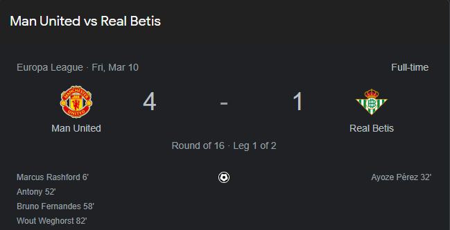
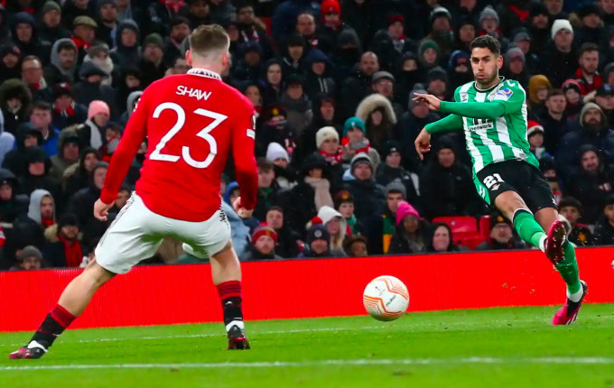
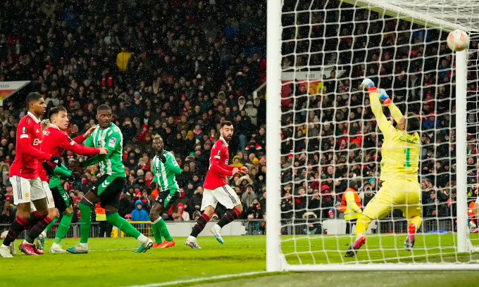

Man Utd hạ Real Betis 4-1 ở lượt đi vòng 1/8 Europa League tối 9/3, bốn ngày sau thảm bại 0-7 dưới tay Liverpool.
HLV Erik ten Hag giữ nguyên đội hình xuất phát ở trận trước khi tiếp Betis, với lời giải thích trước giờ bóng lăn rằng: "Chúng tôi dĩ nhiên muốn phục thù và đây là đội hình tốt nhất để làm điều đó".
Ten Hag đã đúng, khi Man Utd mở tỷ số ngay phút thứ sáu nhờ công của Marcus Rashford. "Quỷ Đỏ" gặp chút khó khăn sau khi bị Azoye Perez gỡ hoà, nhưng sang hiệp hai, Antony và Bruno Fernandes lần lượt ghi bàn trước khi tiền đạo Wout Weghorst ấn định thắng lợi cho chủ nhà.
Ten Hag vẫn trao băng đội trưởng cho Fernandes ở trận này, dù tiền vệ Bồ Đào Nha bị chê trách những ngày qua do thiếu tinh thần thủ lĩnh. Bên phía Betis, tiền vệ thủ quân 42 tuổi Joaquin đá chính, ở năm thứ 23 làm cầu thủ chuyên nghiệp.
Khác với trận thua Liverpool, Fernandes trở lại chơi ở vị trí số 10 thay vì dạt trái. Phút thứ sáu, đội trưởng Man Utd dốc bóng bên phải rồi tạt vào sệt, khi trung vệ Luiz Felipe cắt bóng không tốt. Rashford thu hồi bóng trước cấm địa, rồi sút căng về góc gần tầm cao hạ gục thủ môn Claudio Bravo. Felipe đã cố gắng trườn người sang mạo hiểm dùng đầu chắn bóng nhưng bất thành.
Bàn thắng mở tỉ số của Marcus Rashford ngay phút thứ 6 của trận đấu. Ảnh: Thethao247
Man Utd phung phí cơ hội sau bàn mở tỷ số, khi Weghorst có ba cơ hội ngon ăn nhưng đều dứt điểm không tốt. Họ phải trả giá ở phút 32, khi tiền vệ Juanmi chuyền vào cấm địa cho Ayoze Perez. Sau một nhịp đỡ ngực ở rìa cấm địa bên phải, Perez duỗi mu sút chìm chéo góc gỡ hoà 1-1 cho Betis.
Cú sút của Azoye Perez (phải) gỡ hoà cho Betis. Ảnh: EPA
Những phút sau đó, Man Utd căng thẳng sau khi thủng lưới, và suýt bị dẫn ngược ở phút 44. Thủ môn David de Gea chuyền bóng thẳng vào chân đối thủ, giúp Perez căng ngang trúng chân Fernandes và dội cột dọc chủ nhà bật ra ngoài. Ten Hag buộc phải điều chỉnh sau giải lao, bằng cách đưa hậu vệ Aaron Wan-Bissaka vào thay Diogo Dalot gây thất vọng.
Không như trận trước, Man Utd nhập cuộc hiệp hai tốt hơn và Antony ghi bàn chỉ sau sáu phút. Nhận bóng từ Fernandes ở rìa cấm địa, Antony rẽ vào trong rồi cứa lòng chân trái về góc xa tầm cao nâng tỷ số lên 2-1. Bàn thắng mang đậm phong cách của tiền vệ Brazil, và giống danh thủ Arjen Robben thời trước.
Màn an mừng sau khi cú cứa lòng bằng chân trái nghệ thuật của Antony nâng tỉ số lên 2-1 Ảnh: Goal.com
Sáu phút sau, Fernandes dứt chuỗi tám trận "tịt ngòi" khi anh đánh đầu cắt mặt ở cột gần từ quả phạt góc của Luke Shaw. Thủ môn Bravo chạm được tay vào bóng nhưng vẫn không thể cứu thua.
Bàn nâng tỷ số lên 3-1 của Bruno Fernandes (thứ hai từ phải sang). Ảnh: AP
Trong thời gian còn lại, Antony bỏ lỡ hai cơ hội đối mặt để ghi thêm bàn. Weghorst cũng phung phí cơ hội nhưng cuối cùng cũng lập công ở phút 82. Tiền vệ Facundo Pellistri đột phá bên phải rồi chuyền vào cho Scott McTominay sút trúng tay thủ môn bật ra. Weghorst ập vào đá bồi về góc xa vào lưới, rồi anh chạy về phía cột phạt góc, gào lên trong hạnh phúc với hai nắm đấm rung bần bật. Đây là bàn đầu tiên của anh cho Man Utd trên sân Old Trafford, giúp đội nhà tạo cách biệt ba bàn trước lượt về ở Tây Ban Nha sau đây một tuần.
Đội hình thi đấu
Man Utd: De Gea; Dalot (Wan-Bissaka 46), Varane, Martinez, Shaw (Malacia 65); Casemiro, Fred (McTominay 82); Antony (Pellistri 82), Fernandes, Rashford (Sancho 65); Weghorst.
Real Betis: Bravo; Sabaly, Pezzella, Luiz Felipe, Abner; Rodriguez (Guardado 65), William; Luiz Henrique (Ruibal 59), Joaquin (Canales 59), Juanmi (Jose 80); Ayoze (Iglesias 65).
Highlight Trận Đấu
Anh Tuấn